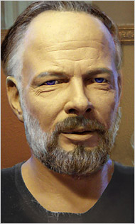
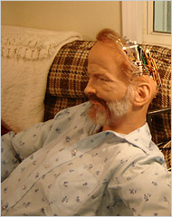

Philip K Dick was an American science fiction writer and novelist who changed the genre profoundly. Discarding the optimistic and simple world-view of Golden Age science fiction, Dick consistently explored the themes of the nature of reality and humanity in his novels, which were populated by common working people, rather than galactic elites.—Philip K. Dick
Philip K Dick was an American science fiction writer and novelist who changed the genre profoundly. Discarding the optimistic and simple world-view of Golden Age science fiction, Dick consistently explored the themes of the nature of reality and humanity in his novels, which were populated by common working people, rather than galactic elites.—Philip K. Dick

An android-portrait of Philip K Dick—In an unparalleled technical collaboration, a team of artists, writers, engineers, literary scholars, and freethinkers are creating a lifelike, android portrait of one of America's well-known science-fiction writers.
Video of Philip K. Dick robot at AAAI-05 conference: [1] [2] [3] [4] [5]
A Strange Loss of Face—The robot made several public appearances last year, including at the Comic Con in San Diego, where he (it?) was on a panel for the coming movie, "A Scanner Darkly," which is based on a Dick novel.

The android, which looked just like the author and was able to conduct rudimentary conversations about Mr. Dick's work and ideas, was at the cutting edge of robotic technology, able to make eye contact and believable facial expressions...using the latest artificial intelligence...and a skinlike substance called "frubber."
- Also see Valis the Opera